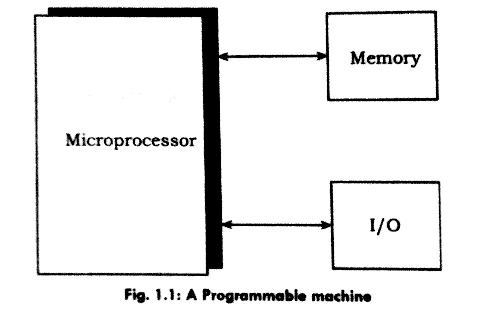
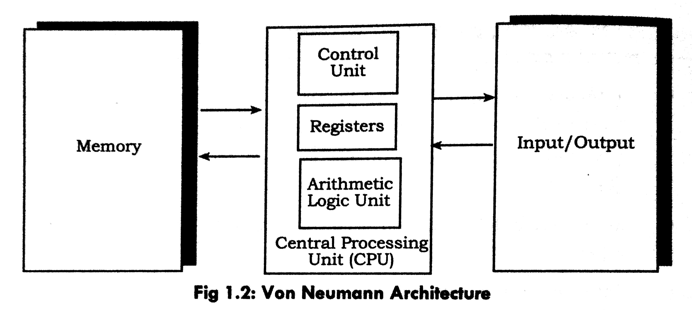

Microprocessor
A microprocessor is a multi-purpose, programmable, clock-driven, register-based electronic device. It reads binary instructions from a storage device called memory, accepts binary data as input, processes data according to the instructions, and provides results as output.

A typical programmable machine consists of four components: microprocessor, memory, input, and output.
Application of Microprocessor
Microprocessors are used in a wide variety of devices. The application of microprocessors can be catagorized into:
Reprogrammable
- personal computers
- servers
- notebooks
- smartphones
Embedded
- home appliances
- machinery
- automated systems
- communication devices
Evolution of Microprocessors
- Early 1970s: Intel introduced the first commercially available microprocessors, the 4004 and 4040 devices. These were 4-bit processors with limited capabilities.
- Intel followed these with 8-bit microprocessors like the 8008 and 8080.
- To compete with Motorola, MOS Technology, and Zilog, Intel released the 8085 microprocessor, an improved version of the 8080.
- By the late 1970s, Motorola 6800 series, MOS Technology 65xx family, and Zilogs Z80 gained popularity due to their ease of use or affordability.
- The Intel 8088 (introduced in 1979) gained recognition due to its incorporation in the IBM PC. This led to the development of a series of Intel processors based on the 8088 design.
Von Neumann Architecture
It is named after the mathematician and early computer scientist John Von Neumann. It is known as stored program architecture. The computer has single storage system (memory) for storing data as well as program to be executed.

The architecture has following components:
Control Unit (CU) has overall responsibility for the system. It controls various activities within microprocessor.
Arithmetic-Logic Unit (ALU) performs arithmetics(addition, subtraction, etc) and logics(and, or, etc).
Registers are small memory within the CPU. This is the only storage to which the ALU has direct access.
Memory
Memory is a device where both program code and data reside while the program is in execution. It is often attributed to John Von Neumann Memory or Main Memory or Primary Memory.
Input and Output
Microprocessor takes in input from the input devices as well as from the data stored in secondary storage. It gives output through output device after processing.
The Memory Subsystem
Memory is where the computer stores information and (running) programs. Memory is made up of bita: the bit is the smallest unit of storage, it can hold one of two values: 1 and 0 (zero). Bits are grouped into larger unita called bytes (8 bits). Group of Bytes are called as worde.
There are two important attributes associated with every chunk of memory:
- Its address and
- Its contents
Memory Operations
Memory is capable of doing following things
- Deliver the current contents of a designated memory cell to the CPU (memory read).
- Store new contents in a designated memory cell (memory write).
For the first operation (known as memory read) the CPU must pass two pieces of information to the memory subaystem.
- The address of the memory cell to be read.
- An indication that a read is requested.
The memory subsystem, having retrieved the information, must then forward it on to the CPU.
In order to carry out the second operation (a memory write), the CPU must pass:
- The address of the memory cell to be stored into.
- The new contents to be stored.
- An indication that a write is requested.
In order to perform these operations Processor needs following registers and control signal:
The Memory Address Register (MAR): Which contains the address of the requested cell, the one we want either to read from or to write into.
The Memory Data Register (MDR): The memory subsystem places the retrieved contents of memory (read) and the CPU places the new contents of memory (write).
A Read/Write Line (R/W): Used to indicate whether the required operation is a read or a write.
Input/Output Subsystem
In order to communicate with anything outside the CPU/Memory system we need an 1/0 subsystem. This subsystem needs to be able to control many different types of device, for example: Screen, keyboard, printer, but they all have very different characteristics.
I/O Controllers
Compare to RAM, I/O devices are extremely slow. If the CPU had to wait for peripheral I/O to complete before carrying on then the CPU is going to spend a good deal of its time doing nothing useful.
The solution is to use an I/O Controller, which is a special purpose processor which has small memory buffer, and a control logic to control the I/O device (e.g. move disk arm).
In its simplest form, the procedure for performing an I/O request (input or output, the scheme is the same) is as follows:
- CPU sends I/O request information to the I/O controller. This is usually done by having the controller's registers accessible to the CPU.
- The controller takes over responsibility of the I/O request. For example on a disk read, the controller will be responsible for moving the arm to the appropriate cylinder. Data arriving from the disk will be buffered in the controller's internal memory and then by the process of Direct Memory Access or DMA it is transferred to RAM.
Harvard Architecture
Harvard architecture has separate data and instruction busses, allowing transfers to be performed simultaneously on both busses. A Von Neumann architecture has only one bus which is used for both data transfers and instruction fetches, and therefore data transfern and instruction fetches must be scheduled they can not be performed at the same time.
It is possible to have two separate memory systems for a Harvard architecture. As long as data and instructions can be fed in at the same time, then it doesn't matter whether it comes from a cache or memory. But there are problems with this. Compilers generally embed data (literal pools) within the code, and it is often also necessary to be able to write to the instruction memory space, for example in the case of self modifying code, or, if a debugger is used, to set software breakpoints in memory. If there are two completely separate, isolated memory systems, this is not possible. There must be some kind of bridge between the memory systems to allow this.
Using a simple, unified memory system together with a Harvard architecture is highly inefficient. Unless it is possible to feed data into both busses at the same time, it might be better to use a von Neumann architecture processor.
Use of Caches
At higher clock speeds, caches are useful as the memory speed is proportionally slower. Harvard architectures tend to be targeted at higher performance systems, and so caches are nearly always used in such systems.
Von Neumann architectures usually have a single unified cache, which stores both instructions and data. The proportion of each in the cache is variable, which may be a good thing. It would in principle be possible to have separate instruction and data caches, storing data and instructions separately. This probably would not be very useful as it would only be possible to ever access one cache at a time.
Caches for Harvard architectures are very useful. Such a system would have separate caches for each bus. Trying to use a shared cache on a Harvard architecture would be very inefficient since then only one bus can be fed at a time. Having two caches means it is possible to feed both buses simultaneously .... exactly what is necessary for a Harvard architecture.
This also allows to have a very simple unified memory system, using the same address space for both instructions and data. This gets around the problem of literal pools and self modifying code. What it does mean, however, is that when starting with empty caches, it is necessary to fetch instructions and data from the single memory system, at the same time. Obviously, two memory accesses are needed therefore before the core has all the data needed. This performance will be no better than a von Neumann architecture. However, as the caches fill up, it is much more likely that the instruction or data value has already been cached, and so only one of the two has to be fetched from memory. The other can be supplied directly from the cache with no additional delay. The best performance is achieved when both instructions and data are supplied by the caches, with no need to access external memory at all.
This is the most sensible compromise and the architecture used by certain Harvard processor cores. Two separate memory systems can perform better, but would be difficult to implement.
Basic Architecture of Microprocessor Based Systems
Basic Components of Microprocessor based system are as follows:
- Control Unit
- Arithmetic and Logic Unit
- Memory
- Input/Output
- CPU Registers
- System Bus
CPU Registers
In computer architecture, a processor register is a very fast computer memory used to speed the execution of computer programs by providing quick access to commonly use values typically, the values being in the midst of a calculation at a given point in time.
These registers are the top of the memory hierarchy, and are the fastest way for the system to manipulate data. In a very simple microprocessor, it consists of a single memory location, usually called an accumulator. Registers are built from fast multi-ported memory cell. They must be able to drive its data onto an internal bus in a single clock cycle. The result of ALU operation is stored here and could be re-used in a subsequent operation of saved into memory.
Registers are normally measured by the number of bits they can hold, for example, an "8 bit register" or a "32-bit register". Registers are now usually implemented as a register file, but they have also been implemented using individual flip-flops, high speed core memory, thin film memory, and other ways in various machines
There are several other classes of registers:
- Accumulator: It is most frequently used register used to store operand before the execution of an instruction and to store result after the execution of the instruction.
- General Purpose registers: General purpose registers are used to store data, address and intermediate results during program execution. Its contents can be accessed through assembly programming. It can be further classified into Integer and Floating point registers.
- Special purpose Registers: Users do not access these registers. These are used by computer system at the time of program execution. Some types of special purpose registers are given below:
- Memory Address Register (MAR): It stores address of data or instructions to be fetched from memory or Input/Output devices.
- Memory Buffer Register (MBR): It stores instruction and data received from the memory and sent to be written in memory temporarily.
- Memory Data Register (MDR): It is similar to MAR. It stores instruction and data received from the memory and to be sent to the memory for writing.
- Instruction Register (IR): Instructions are stored in instruction register. When one instruction is completed, next instruction is fetched from memory for processing.
- Program Counter (PC): It stores the address of next instruction to be executed.
System Bus
The system bus is a cable which carries data communication between the major components of the computer, including the microprocessor. Not all of the communication that uses the bus involves the CPU, although naturally the examples used in this tutorial will center on such instances.
The system bus consists of three different groups of wiring, called the data bus, control bus and address bus. These all have separate responsibilities and characteristics, which can be outlined as follows:
Control Bus
The control bus carries the signals relating to the control and co-ordination of the various activities across the computer, which can be sent from the control unit within the CPU. Different architectures result in differing number of lines of wire within the control bus, as each line is used to perform a specific task. For instance, different, specific lines are used for each of read, write and reset requests.
Data Bus
This is used for the exchange of data between the processor, memory and peripherals, and is bi-directional so that it allows data flow in both directions along the wires. Again the number of wires used in the data bus (sometimes known as the 'width') can differ. Each wire is used for the transfer of signals corresponding to a single bit of binary data. As such, a greater width allows greater amounts of data to be transferred at the same time.
Address Bus
The address bus contains the connections between the microprocessor and memory/IO devices that carry the signals relating to the addresses which the CPU is processing at that time, such as the locations that the CPU is reading from or writing to. The width of the address bus corresponds to the maximum addressing capacity of the bus, or the largest address within memory that the bus can work with. The addresses are transferred in binary format, with each line of the address bus carrying a single binary digit. Therefore the maximum address capacity is equal to two to the power of the number of lines present (2^n lines).